a) TDV-LeWM CEM Goal Completion Compared to LeWM
b) No Operation (no-op) Example
c) MPC CEM Success Rates and No-op Effects
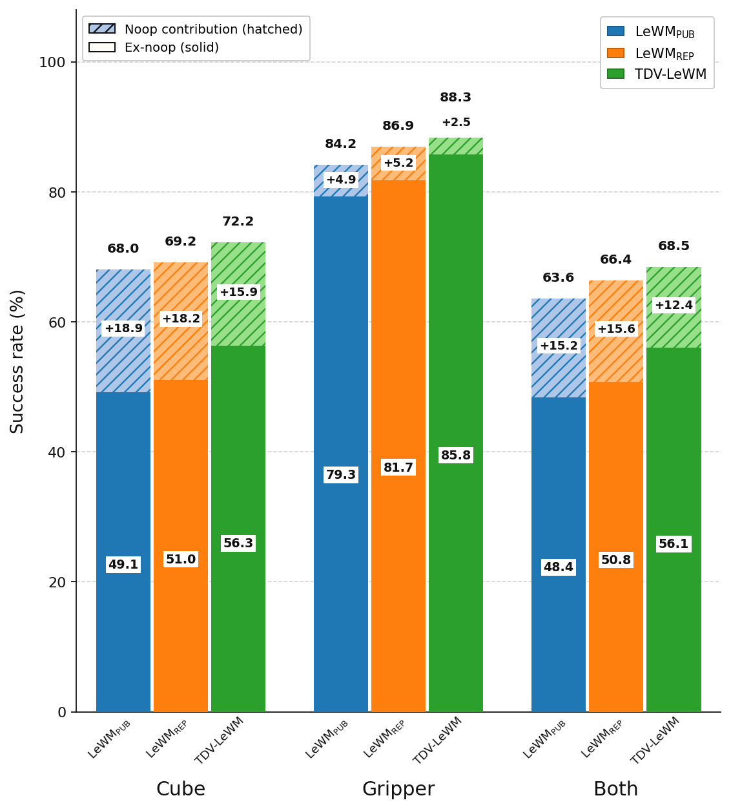
Joint-Embedding Predictive Architecture (JEPA) world models are becoming increasingly capable, with LeWM showing that a small, simple architecture using SIGReg can learn effective latent dynamics directly from pixels. Recent work on Temporal Difference in Vision (TDV) introduced a self-supervised learning signal based on the causal structure of pixel differences in video, with particular strength in visually dense environments. In this work, I add a TDV-style auxiliary representation-learning signal to LeWM to bias its representation away from appearance and toward motion and task-relevant geometry. I train the model end-to-end on a single GPU and evaluate it on OGBench-Cube, the most visually complex task studied by LeWM and its weakest-performing benchmark. I also find that roughly 38% of OGBench-Cube evaluation scenarios are already successful at initialization, inflating reported performance and making the task appear closer to saturation than it is. On the remaining non-trivial scenarios, LeWM achieves only about 50% cube success, while TDV-LeWM reaches 56%, a 5.3 percentage-point improvement across 15k scenarios. Because LeWM optimizes the latent representation of the full image, I also evaluate gripper and joint cube-gripper outcomes, where the TDV inductive bias improves performance consistently and the gains generally widen after removing no-operation cases.
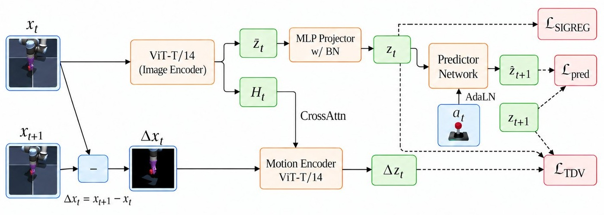
(a) Prediction loss \(\mathcal{L}_{\mathrm{pred}}\)
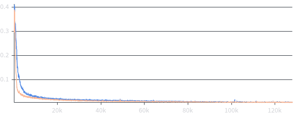
(b) SIGReg loss \(\mathcal{L}_{\mathrm{SIGReg}}\)
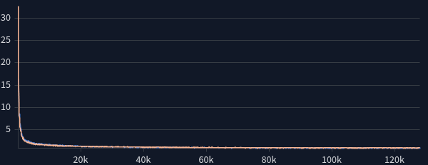
(c) TDV residual loss \(\mathcal{L}_{\mathrm{TDV}}\)
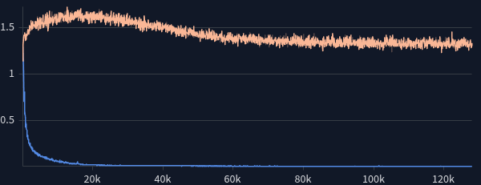
(d) Total loss \(\mathcal{L}\)
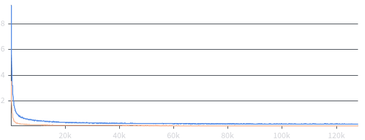
Loss curves for the terms in \(\mathcal{L}\). TDV-LeWM needed a larger SIGReg weight (\(\lambda=0.25\) vs \(0.1\)) to offset the extra predictive bias. Other SIGReg hyperparameters were left at the SWM library defaults (1024 projections, 17 knots). If we set \(\alpha=0\) in TDV-LeWM, then it is equivalent to vanilla LeWM, and we can still measure TDV's loss (before it is zeroed out in the loss by \(\alpha\)) via its motion encoder. This is visualized in c) and labeled as LeWM\(_{REP}\). We see that that as LeWM trains \(z_t\) becomes predictive of \(z_{t+1}\),reducing the TDV loss despite the noise from the untrained motion encoder.
(a) Mean per-coordinate variance
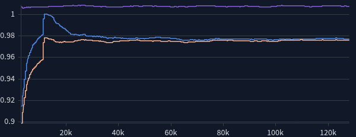
(b) RMS of the embedding mean
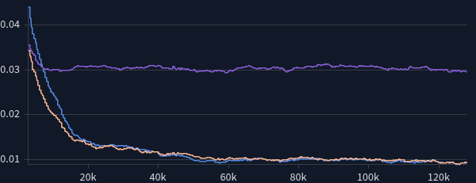
(c) Roy–Vetterli effective rank (fraction of \(D\))
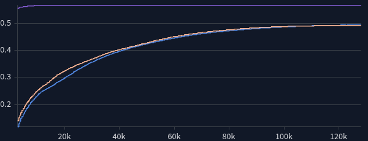
Collapse diagnostics on post-projection embeddings across optimization steps (over 10 epochs), with frozen \(\mathrm{LeWM_{PUB}}\) as a reference. The short transient in (b) and (c) for the frozen published model is the temporal averaging buffer filling up. \(\mathrm{LeWM_{PUB}}\) keeps a slightly higher Roy–Vetterli effective rank than both models I trained.
Training and evaluation were primarily done on the Runpod Community cloud. I opted to build deployment infrastructure to quickly perform hyperparameter sweeps and run various evaluation types across different seeds. The infrastructure I built can be visualized in the figure on the right and was robust to Runpod's commonly unreliable NVIDIA drivers and occasional machine crashes.
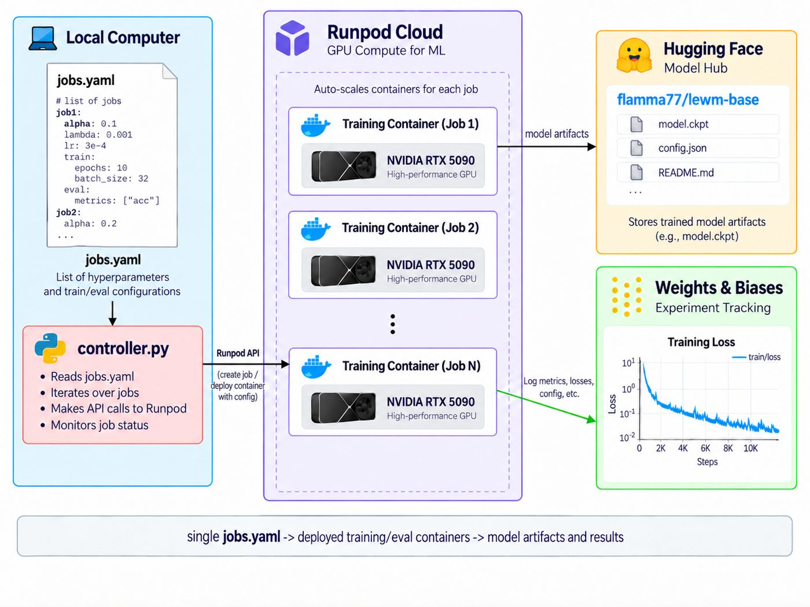
jobs.yaml drives training and eval containers on RunPod. Artifacts go to
Hugging Face;
metrics go to Weights & Biases. Failed driver detections recycle the pod onto another machine.
A no-op is defined as a scenario whose start displacement is already below the 4cm success threshold for OGBench-Cube in the Mujoco simulator. Thereby, these scenarios are trivially successful for any planner. This occurs as a sampling artifact because the evaluation set samples random 25-step sequences from the dataset, and a large percentage of sequences have starting and ending object positions within the 4cm threshold. The table below shows the no-op counts for the cube, gripper, and both objects across 15k randomly sampled scenarios over 3 seeds
I include gripper no-ops because LeWM encodes the full scene into a single latent. As the next section shows, LeWM typically prioritizes minimizing gripper latent displacement over the cube's.
| Seed | Cube | Gripper | Both |
|---|---|---|---|
| 7 | 1850/5000 (37.0%) | 447/5000 (8.9%) | 190/5000 (3.8%) |
| 42 | 1957/5000 (39.1%) | 465/5000 (9.3%) | 221/5000 (4.4%) |
| 101 | 1899/5000 (38.0%) | 456/5000 (9.1%) | 214/5000 (4.3%) |
| Pooled | 5706/15000 (38.0%) | 1368/15000 (9.1%) | 625/15000 (4.2%) |
Cube no-ops make up ~38% of the evaluation set and account for most of the inflation in cube and both success rates. Gripper no-ops make up ~9%. The joint both-no-op rate is only ~4%, meaning that most cube no-ops still require the gripper to move. The union of scenarios where either the cube or gripper is already at goal is 6449/15000 (43.0%).
In a recent work, LpWM (Kuang et al., 2026), the authors write in the appendix under “Planning and Evaluation” (p. 15):
For OGBench-Cube, we follow the evaluation protocol of Maes et al. [2026b], where goal observations are sampled only 25 raw environment steps ahead. This short horizon can make the planning task relatively easy, potentially leading to performance saturation and limiting the discriminative power of the benchmark. We leave evaluation under more challenging longer-horizon and larger-frameskip settings to future work.
I argue that the apparent saturation of OGBench-Cube and the planning task appearing “easy” is not simply a consequence of short-horizon planning; the standard evaluation is heavily biased toward trivially successful configurations: 38% of episodes begin with the cube already inside the success threshold. Once these initially satisfied cases are removed, the apparent saturation, documented at 65–70% in Figure 4a of the LpWM paper, largely disappears and the benchmark retains discriminative power. More fundamentally, it is difficult to reconcile characterizing the planning problem as “easy” with reported success rates below 75% (in LeWM, LpWM, and across many other works), particularly when a substantial fraction of the evaluation set is already successful at initialization.
Evaluation was done using the method in LeWM paper and the standard method for SWM on the OGBench-Cube task: anytime displacement of the cube below 4cm from its goal position. Because the latent represents the state of the entire image, I introduce two other metrics: the gripper's goal displacement, and "both", meaning the cube and gripper each reach their goal (the intersection of the two success events). For the gripper I use the same anytime goal displacement threshold of 4cm.
As discussed in the No-Op Evaluation section, the sampling distribution of OGBench-Cube includes a plethora of no-op scenarios for the cube and gripper. The following table shows the MPC success rates across various planners, including conditioning on removal of no-op scenarios.
| Planner | Model | Cube | Cube ex-noop | Grip | Grip ex-noop | Both | Both ex-noop |
|---|---|---|---|---|---|---|---|
| CEM | LeWMREP | 69.2% | 51.0% | 86.9% | 81.8% | 66.4% | 50.8% |
| LeWMPUB | 68.0% | 49.1% | 84.2% | 79.3% | 63.6% | 48.4% | |
| TDV-LeWM | 72.2% | 56.3% | 88.3% | 85.8% | 68.5% | 56.1% | |
| iCEM | LeWMREP | 69.8% | 51.9% | 83.1% | 76.7% | 65.7% | 51.6% |
| LeWMPUB | 71.7% | 54.1% | 78.5% | 74.5% | 63.9% | 53.2% | |
| TDV-LeWM | 73.7% | 57.6% | 83.2% | 80.4% | 67.2% | 56.6% | |
| Adam | LeWMREP | 68.7% | 48.6% | 79.2% | 70.6% | 64.0% | 48.2% |
| LeWMPUB | 69.1% | 49.3% | 77.1% | 67.8% | 63.6% | 48.1% | |
| TDV-LeWM | 70.5% | 51.8% | 81.7% | 76.1% | 65.1% | 51.0% |
CEM: \(n=15000\) (8551 ex-noop). iCEM and Adam: \(n=6000\) (3343 ex-noop). Pooled across seeds 7, 42, and 101.
TDV-LeWM performs the best with every planner, and the gap widens after removing no-ops, especially for cube/both (CEM both: +2.1 / +4.9 vs \(\mathrm{LeWM_{REP}}\) all / ex-noop). The performance benefit of TDV decreases with a more powerful planner (iCEM and Adam). All three models optimize gripper displacement more effectively than cube displacement, consistent with the gripper occupying a larger share of the image and therefore having greater influence in the latent representation.
As an additional evaluation, I measure whether the latent cost used by MPC correctly ranks candidate action sequences by their true physical outcomes, an important property for effective MPC.
For a fixed initial state and goal, I sample candidate action sequences \((a^{(1)},\dots,a^{(N)})\). For each candidate, the world model predicts the terminal latent
with latent planning cost
The same action sequence is then executed in the simulator to measure the resulting physical costs:
I also define a normalized combined cost
I then compute the Spearman rank correlations
Higher positive \(\rho\) means that action sequences preferred by the latent objective also tend to produce better physical outcomes, which is the ranking behavior useful for MPC.
Pooled over 3 seeds, 600 scenarios \(\times\) 64 candidates. mean\(\pm\)std is per-scenario \(\rho\); parentheses are pooled \(\rho\).
| Model | \(\rho_{\mathrm{cube}}\) | \(\rho_{\mathrm{grip}}\) | \(\rho_{\mathrm{cg}}\) | %\(\rho>0\) cg |
|---|---|---|---|---|
| LeWMREP | +0.135±0.212 (+0.563) | +0.444±0.296 (+0.514) | +0.417±0.277 (+0.632) | 90% |
| LeWMPUB | +0.136±0.211 (+0.596) | +0.396±0.282 (+0.485) | +0.386±0.255 (+0.638) | 92% |
| TDV-LeWM | +0.165±0.199 (+0.608) | +0.431±0.262 (+0.521) | +0.426±0.230 (+0.657) | 94% |
TDV-LeWM gives the strongest ranking of cube outcomes and the combined objective, while all three models rank gripper outcomes substantially more faithfully than cube outcomes.
Motivated by recent work on temporal straightening for planning in JEPA world models (Wang et al.), I analyzed whether TDV induces implicit temporal straightening of \(z_t\). In the paper, Wang et al. define a latent trajectory as locally straight when consecutive velocities \(v_t = z_{t+1}-z_t\) and \(v_{t+1}=z_{t+2}-z_{t+1}\) point in similar directions as measured by their cosine similarity.
Larger values of \(C_t\) indicate that consecutive latent velocities are more aligned, corresponding to a locally straighter latent trajectory.
TDV explicitly parameterizes the one-step latent displacement as \(z_{t+1}\approx z_t+\Delta z_t\), with the motion encoder directly learning the latent “velocity” \(z_{t+1}-z_t\). This raisesed the question of whether TDV might implicitly encourage temporal straightening within the latent trajectory.
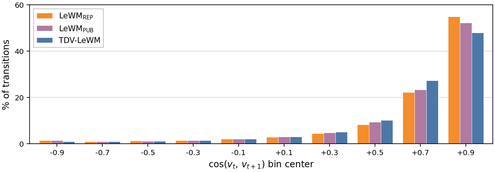
| Model | Mean | Std |
|---|---|---|
| LeWMREP | +0.674 | 0.382 |
| LeWMPUB | +0.669 | 0.381 |
| TDV-LeWM | +0.661 | 0.358 |
TDV-LeWM has a slightly lower mean consecutive-velocity cosine similarity (\(0.661\)) than LeWMREP (\(0.674\)) and LeWMPUB (\(0.669\)). TDV also places fewer transitions in the highest-alignment bin, \([0.80,1.00]\): 47.9% vs. 54.9% and 52.3% for LeWM\(_\mathrm{REP}\) and LeWM\(_\mathrm{PUB}\); however, it has more transitions instead falling into \([0.60,0.80)\). Together with the approximately unchanged mean straightness score, this suggests that the TDV augmentation turns out to not introduce any noticeable effect on straightening the latent space.